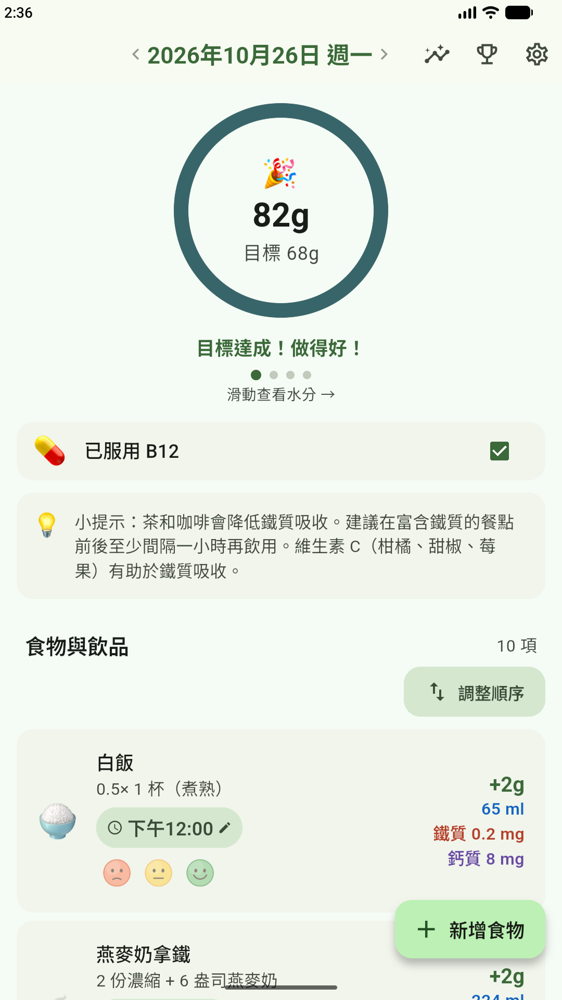
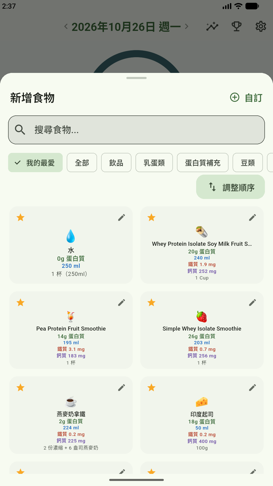
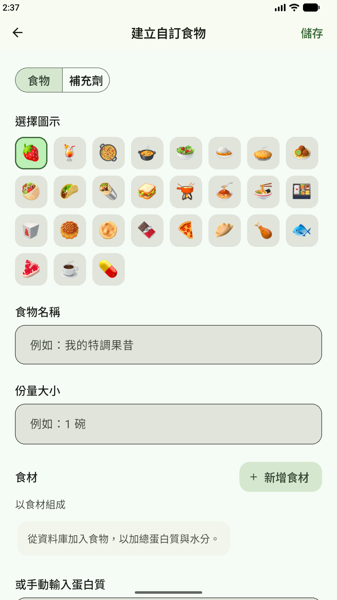
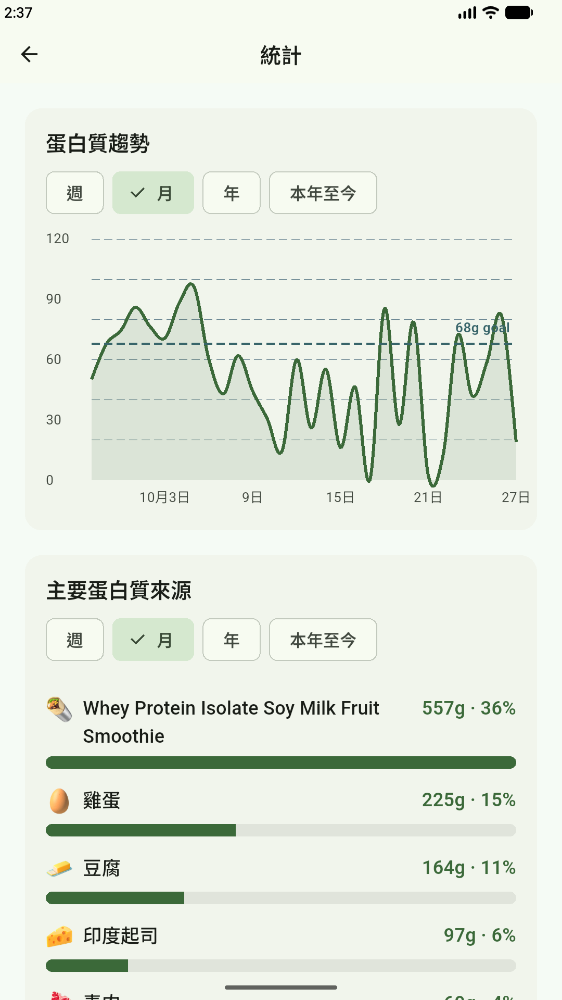
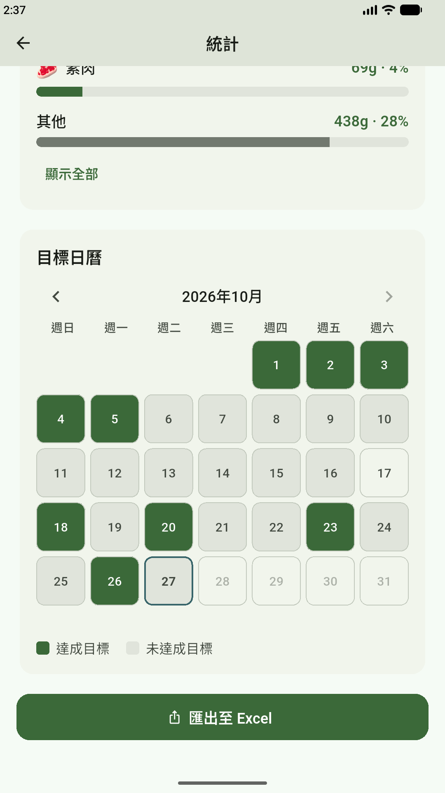
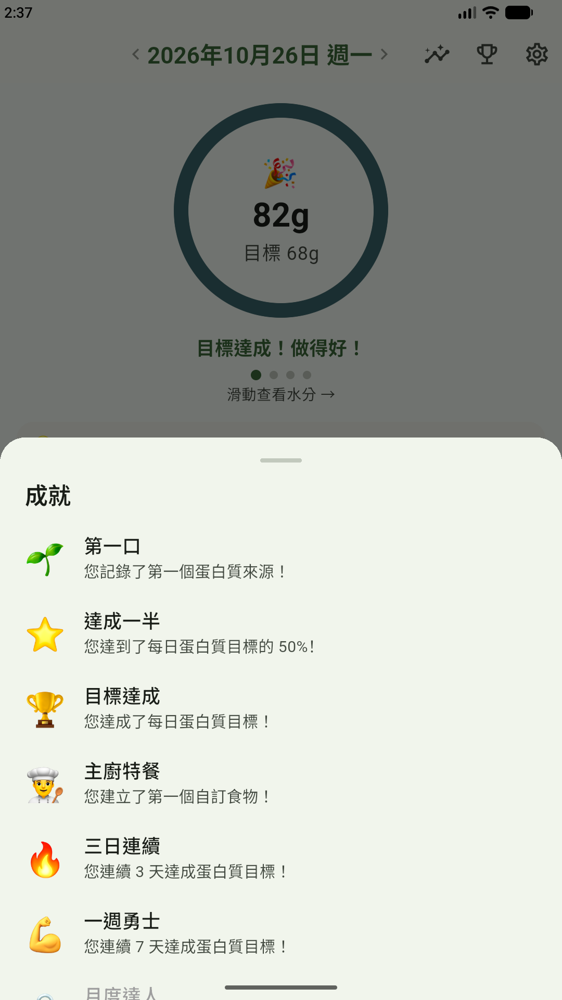

一眼掌握今天
隨著進食逐漸填滿的蛋白質環
主畫面以一個圓環顯示您今天距離蛋白質目標的進度。每記錄一項食物，總量就會增加；達成目標時，還會出現簡短的慶祝畫面。左右滑動圓環即可切換至水分、鐵質與鈣質，視您在「設定」中開啟了哪些追蹤項目而定。
- ✓ 自行設定每日蛋白質目標，例如營養師建議的攝取量
- ✓ 可選擇追蹤水分、鐵質、鈣質與維生素 B12
- ✓ 切換日期即可回顧先前的紀錄
- ✓ 記錄每項食物的時間，也可以標記您有多喜歡它

一鍵記錄
點一下就能新增食物
打開「新增食物」，找到您吃的食物，點一下就完成記錄。POHPS 內建約 100 種常見素食，每種都標示每份的蛋白質、水分、鐵質與鈣質，讓您在新增前就知道它能提供多少營養。
- ✓ 以名稱搜尋，或瀏覽「飲品」、「乳蛋類」等分類
- ✓ 為常吃的食物加上星號，讓它們優先顯示在「我的最愛」
- ✓ 食物清單會依您的飲食類型調整：蛋奶素、全素、五辛素或五辛全素

您的專屬食譜
用自己的食材建立自訂食物
有喜歡的果昔或家傳食譜嗎？只要建立一次，之後每次吃都能一鍵記錄。從資料庫挑選食材組合成新食物，POHPS 會自動加總蛋白質與水分；也可以依照營養標示自行輸入蛋白質。
- ✓ 想建立多少自訂食物與補充劑都可以
- ✓ 選擇您一看就認得的圖示、名稱與份量
- ✓ 組合食材，或手動輸入蛋白質數值

掌握趨勢
看清蛋白質從哪裡來的統計
「蛋白質趨勢」圖表將您每天的攝取量與目標線並列，哪幾天不足一目了然。下方的「主要蛋白質來源」依貢獻多寡排列食物，並顯示各自的公克數與百分比。
- ✓ 可依週、月、年或本年至今檢視
- ✓ 看看哪些食物最能幫助您達成目標
- ✓ 運用這些資訊規劃您的餐點

養成好習慣
每個月的目標日曆
每天達成蛋白質目標，那一天在「目標日曆」上就會變成綠色。一整個月的色塊讓您一眼看出連續達成的天數，空白處則提醒您接下來該加強的地方。
- ✓ 綠色代表達成目標，灰色代表未達成目標
- ✓ 切換月份，回顧過去的紀錄
- ✓ 將紀錄匯出為 Excel 檔案，自行保存或與營養師分享

慶祝每個里程碑
記錄您每一步進展的成就
從記錄第一項食物，到連續 30 天達成目標，成就會隨著您的進展陸續解鎖。隨時點擊主畫面上的獎盃圖示，就能查看您獲得的所有成就。
- ✓ 「第一口」、「達成一半」與「目標達成」記錄您每天的進度
- ✓ 建立第一個自訂食物時，獲得「主廚特餐」
- ✓ 連續 3 天、7 天與 30 天達成目標的連續紀錄成就